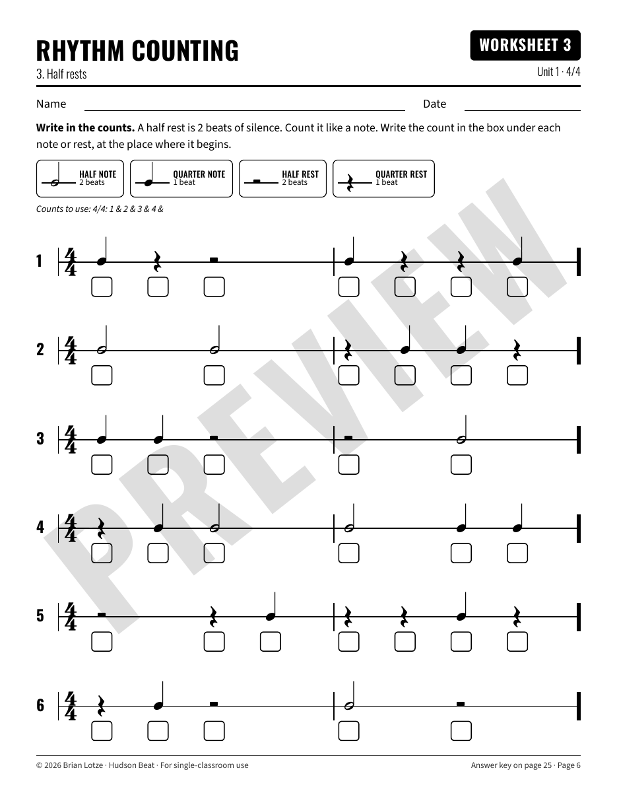
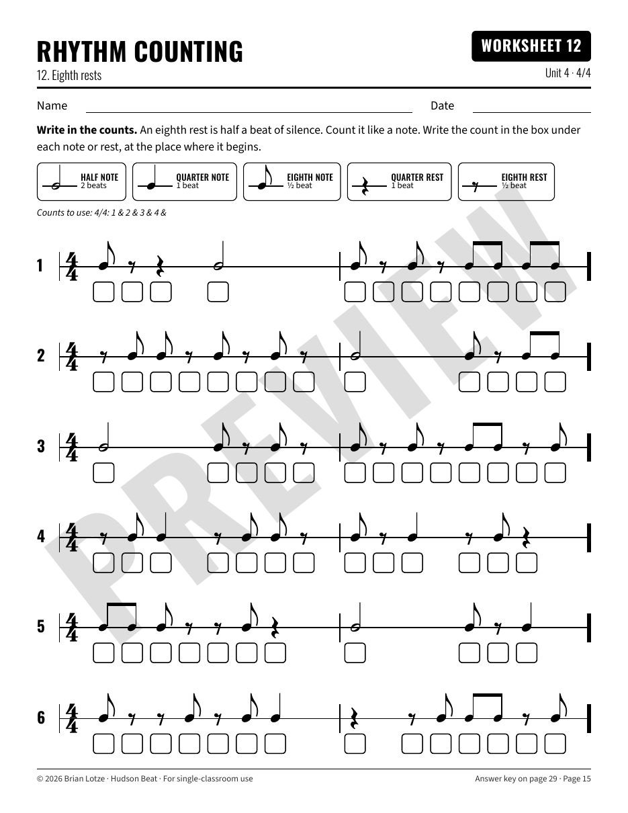
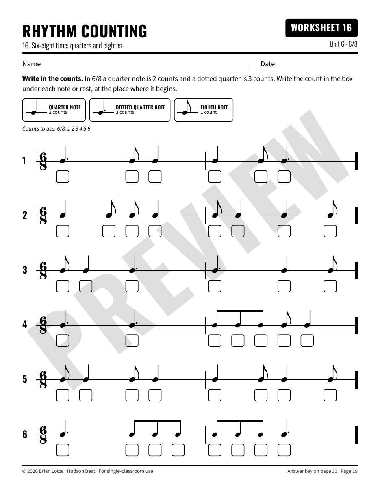

Hudson Beat
From quarter notes to 6/8
Write the count under every note and every rest

PREVIEW
Quarter and half notes

PREVIEW
Eighth rests

PREVIEW
6/8 time
Unit 1
· Quarter, half and whole notes and rests (4/4)
Unit 2
· 3/4 and 2/4 time
Unit 3
· Dotted half notes
Unit 4
· Eighth notes and eighth rests
Unit 5
· Dotted quarter and eighth
Unit 6
· 6/8 time
Unit 7
· Mixed review and challenge
20 worksheets
·
7 units
·
grades 5–8